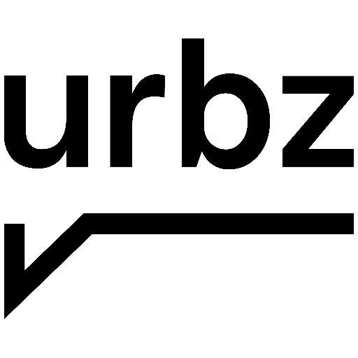

About Us


During spring break group of second year engineering students from New York University
Abu Dhabi went to Dharavi, Mumbai as a part of Engineers for Social Impact course. This
year students were carrying out the last years projects, where our team continued working
on the concept of space optimization. Before leaving to Dharavi, we decided to shift our
approach and concentrate on materials available on the site and then think about the
design of last. The decision fell to use plastics as a material due to the extensive
recycling industry in the community. On the site we have found that space inside of
the house was already optimized according to the needs of household members. From
that point onwards, our main goal was to get educated about the plastic recycling
industry as the machineries used in the 13th compound are optimized to minimize
energy expenses and fit the space available in the workshops. In collaboration
with Urbz organisation and guidance of our faculty member, we have been working
on collecting data about plastic recycling that we are willing to share on this website.
© 2017 by NYU Abu Dhabi Engineering Students